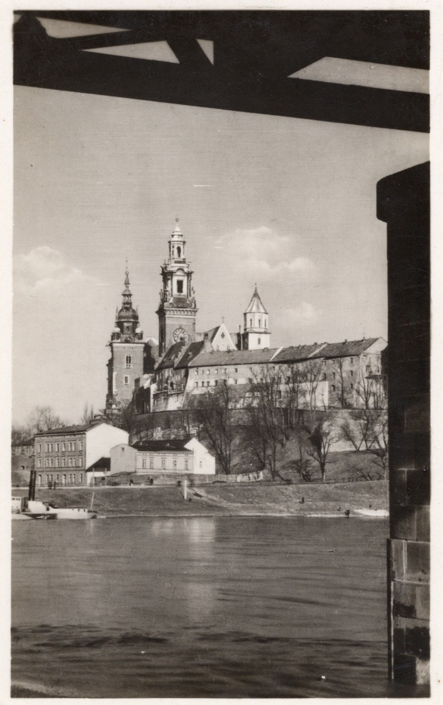
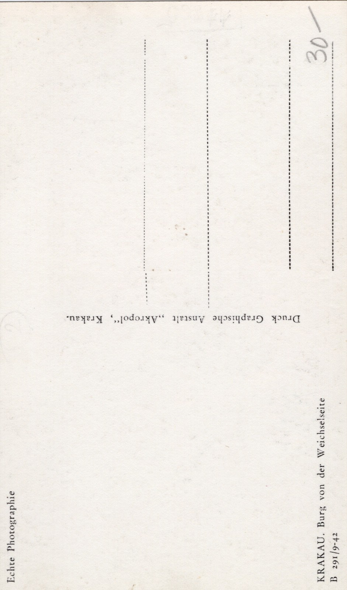

Wawel spod przęsła mostu
Nietypowy kadr — zamek i katedra sfotografowane od dołu, spod przęsła mostu na Wiśle, z barką na pierwszym planie. Niemiecki podpis na awersie i nadruk „9-42” sugerują, że karta powstała już w czasie okupacji, choć dokładna data pozostaje niepewna.
PT:3:1 · pocztówka fotograficzna